Префектура Хоккайдо · Ёити, Нобору · вино
Долина Нобору в Ёити: как яблочный край на Хоккайдо стал одним из главных винных регионов Японии
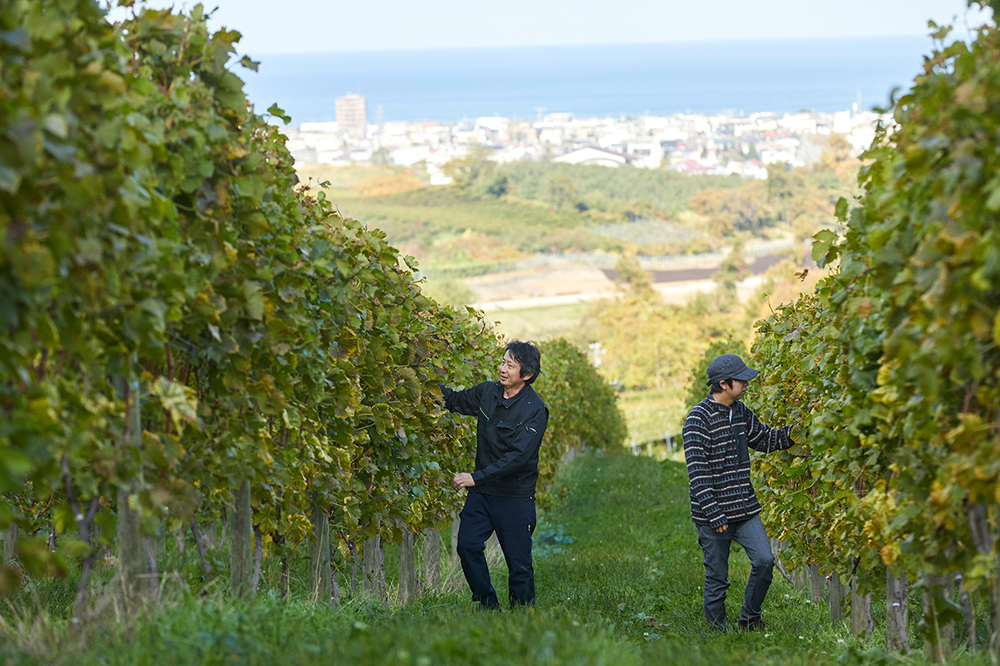
Пятьдесят лет назад маленькую долину Нобору в Ёити целиком занимали яблоневые сады. В 2023 году здесь работали 13 виноделен, а вина из Ёити ищут лучшие рестораны мира.
Долина
От яблок к винограду
Речка Нобору течёт по восточной части городка Ёити с юга на север и впадает в Японское море. По обоим её берегам поднимаются холмы, и между ними лежит небольшая долина, которую так и называют: долина Нобору. Полвека назад её почти всю занимали яблони.
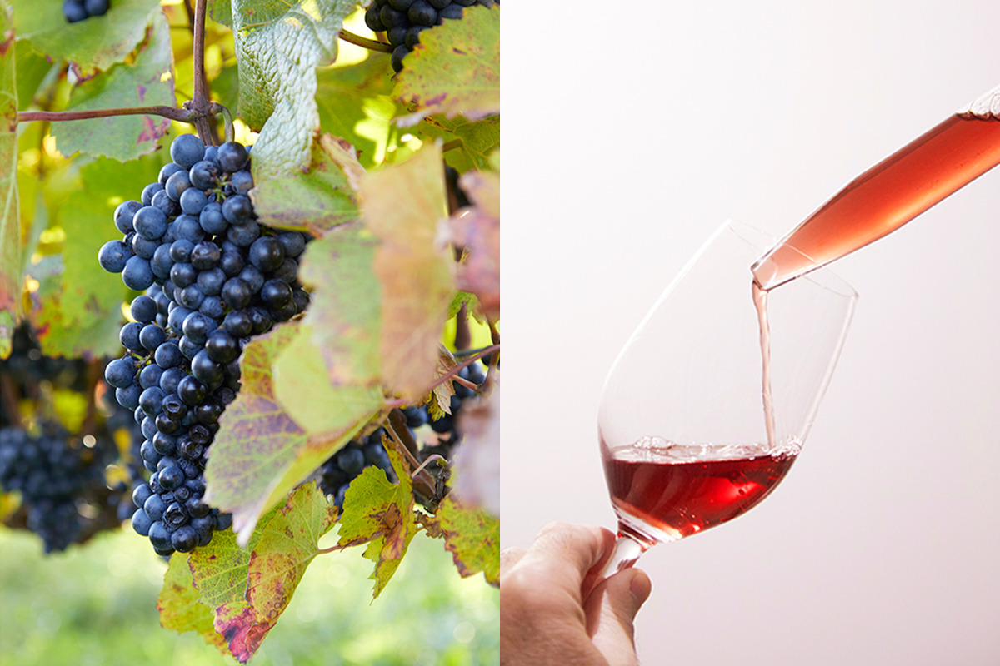
Яблоки в Ёити растили больше ста лет, но в 1970-х годах из-за перепроизводства цены на них обвалились. Фермерам понадобилась другая культура, и в 1980 году здесь впервые посадили виноград винных сортов. Очень скоро местные ягоды прославились качеством, и к 2023 году площадь под винными сортами превысила 150 гектаров.
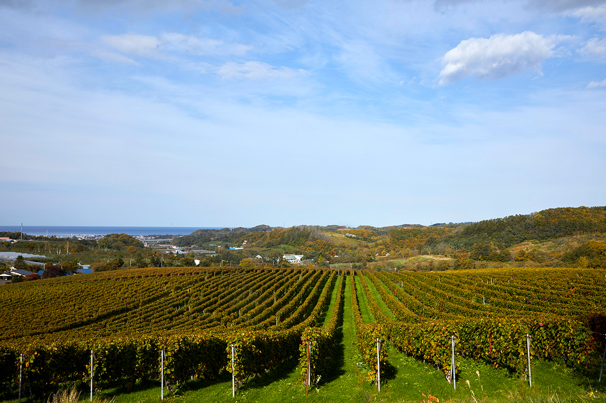
В 2010 году Такахико Сога основал в Нобору свою винодельню Domaine Takahiko, уверенный в будущем этих мест. За ней появились другие: винодельня Mongaku Valley Winery (о ней отдельная статья), Camel Farm Winery и ещё многие. В октябре 2023 года в Ёити насчитывалось 19 виноделен, и 13 из них стояли в долине Нобору.

Большинство здешних виноделен маленькие. Их открыли переселенцы, которые сначала учились выращивать виноград и делать вино прямо здесь. Появились и винодельни среднего размера с хорошим оборудованием: их основали компании из других отраслей. Масштабы и стили стали разнообразнее, и Ёити уверенно вошёл в число главных винных регионов Японии. Его сердце это долина Нобору.
Вслед за вином появились и рестораны, где местные вина подают к местной еде. Первым стал Yoichi SAGRA (весной 2026 года он переехал в Китахиросиму), за ним «Какуто Токусимая» и другие (о них в статье о ресторанах Ёити). От аэропорта Нью-Титосэ до развязки Ёити, откуда начинается долина, полтора часа по скоростной дороге. Из Отару, где много гостиниц, до станции Ёити около получаса и на автобусе, и на поезде.
Почти все винодельни долины, включая Domaine Takahiko, гостей не принимают: так указано на сайте города Ёити в 2026 году. Их вина продают винные магазины и подают рестораны.
Фермеры
На ком держится вино Ёити
Винный виноград в Ёити растёт чуть больше сорока лет, а регион уже признан. Отчасти дело в климате, близком к Бургундии и Шампани. Но не меньше значат фермеры, которые заложили здесь основу виноградарства и умеют растить ягоды на высоком уровне.
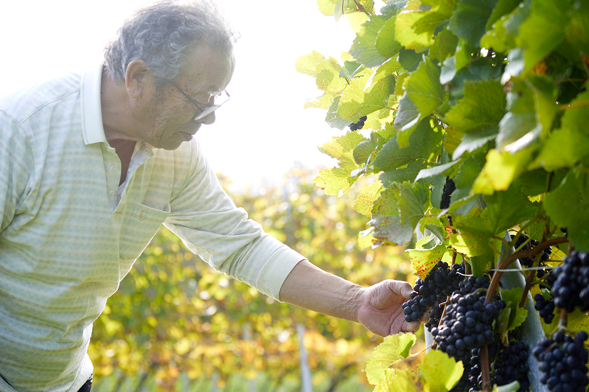
Когда цены на яблоки рухнули, семь фермерских семей Ёити в 1980–1981 годах вырубили яблони и посадили винный виноград. Шпалерного виноградарства здесь не знал никто, и на Хоккайдо оно тоже только начиналось. Опытных людей не было, но фермеры справились вместе. Один из них стал главным в группе, хозяин фермы «Накай канко ноэн» нашёл покупателей для урожая всех семерых, а хозяин фермы «Кимура ноэн» взялся за пино нуар, самый капризный из сортов, и добился успеха.
За ними потянулись другие фермеры, а винодельни с Хоккайдо и других префектур стали заключать с ними контракты. В 2023 году виноград в Ёити выращивали больше 120 хозяйств на площади свыше 150 гектаров, это половина урожая всего Хоккайдо. На этом и стоит слава Ёити как винного города.
Герой
Domaine Takahiko: вино со вкусом даси
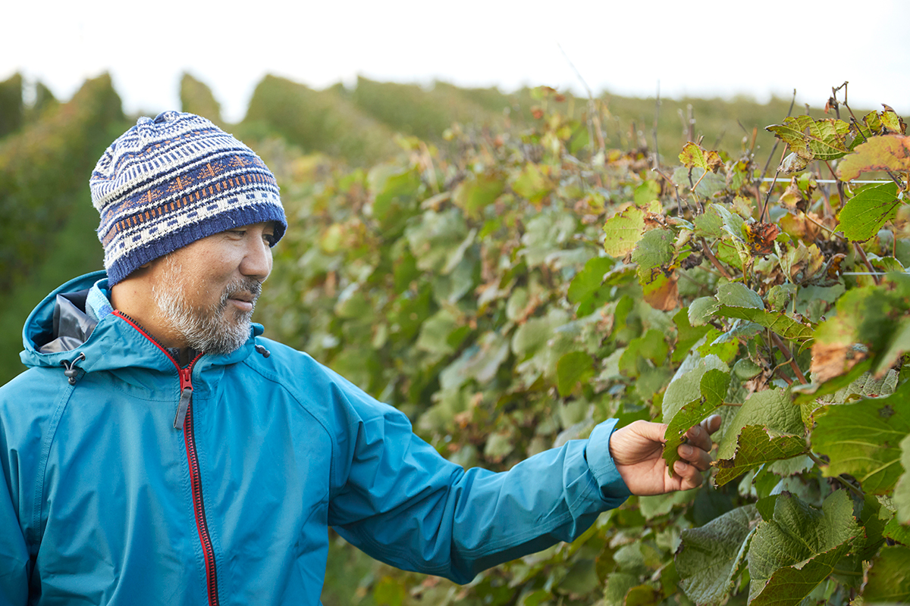
Главная фигура винного Ёити это Такахико Сога, основатель Domaine Takahiko. Впервые он приехал в Ёити в 2002 году как управляющий виноградниками винодельни Coco Farm & Winery из города Асикага в префектуре Тотиги. Винодельня искала хороший виноград и заключила контракты с фермерами Ёити, а Сога регулярно приезжал следить за посадками.
Он уже думал о собственном деле, и пино нуар с фермы «Кимура ноэн», первого контрактного хозяйства, убедил его, что прохладный Ёити может стать большим винным регионом. В 2009 году Сога переехал сюда, а на следующий год взял на себя плодовый сад и основал Domaine Takahiko. Сначала он превратил сад в виноградник и посадил пино нуар. Участок он назвал «Нанацумори»: в саду когда-то росли семь видов плодовых деревьев, а Нанацумори, «семь лесистых холмов», появляются в сказках Кэндзи Миядзавы (1896–1933), поэта и писателя, одного из самых любимых в Японии авторов детских историй. Пока собственные лозы не вошли в силу, вино делали из ягод «Кимура ноэн» и «Накай канко ноэн», где Сога проходил стажировку, чтобы получить статус фермера.
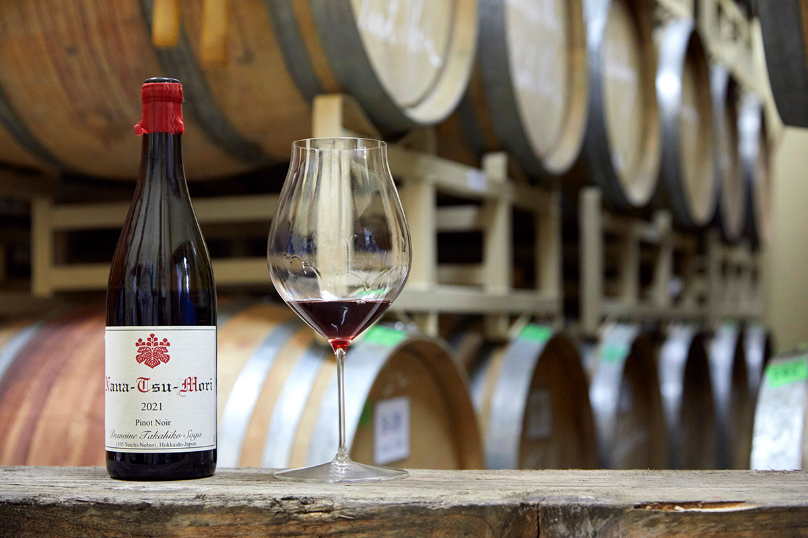
Сога знает вина всего мира и долго думал, зачем делать вино в дождливой Японии. Ответ оказался таким: вино должно передавать терруар Нобору целиком, вместе с дождями, и подходить к японской еде. Ветер и дожди, снег зимой, трава, которая вырастает и увядает, год за годом создают в почве Нанацумори богатый мир микроорганизмов. Чтобы его сохранить и усилить, виноградник ведут по органическим правилам.
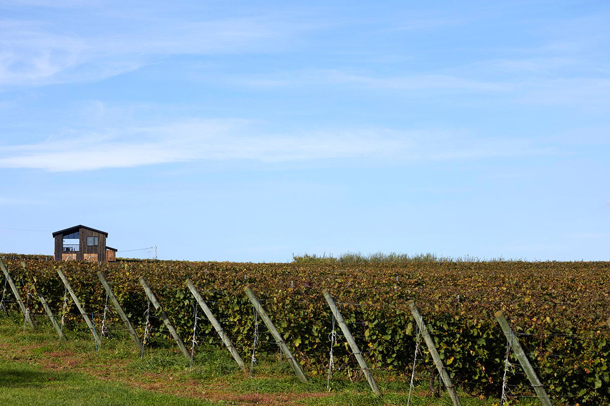
В винодельне вмешиваются в процесс как можно меньше. Чтобы работали разные дрожжи, живущие на ягодах, грозди целиком отправляют в пластиковые кубические чаны. Ни сульфитов, которые мешают диким дрожжам, ни культурных дрожжей не добавляют. Вино настаивается месяц, а в иные годы около 50 дней, затем примерно год выдерживается в бочках. После розлива его выпускают весной второго года после сбора урожая.
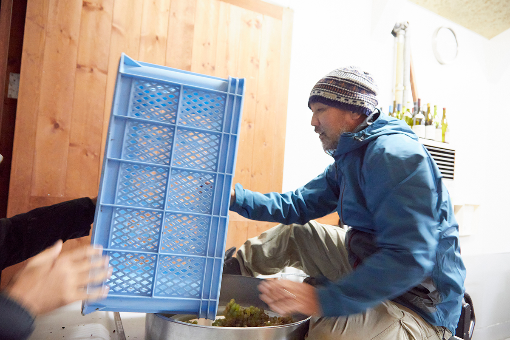
Главное слово для вин Domaine Takahiko это умами. Пино нуар, выросший в прохладном и богатом водой Ёити, не слишком фруктовый и не слишком танинный, зато в нём есть тот же вкус умами, что и в бульоне даси из комбу и кацуобуси. Этот мягкий, долгий вкус поддерживает тонкий фрукт и откликается на японскую кухню, где умами тоже главное.
После появления Domaine Takahiko о Ёити заговорили как о винном регионе, и винодельни стали открываться одна за другой. Среди них немало хозяйств бывших стажёров Соги. И всё же много винограда по-прежнему уезжает из города, поэтому Сога уговаривает фермеров открывать свои винодельни. Первой стала Domaine Mizuki Nakai.
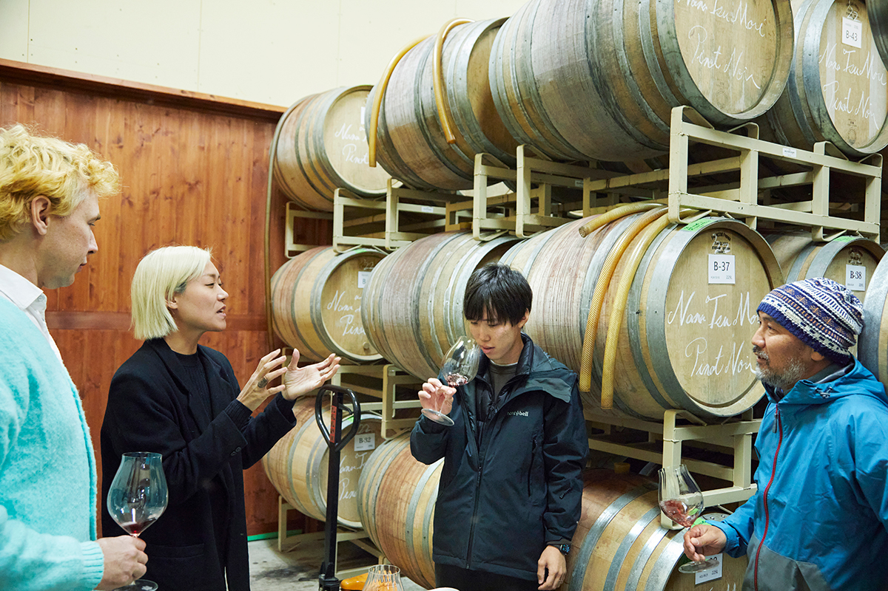
Редкие вина Domaine Takahiko в первую очередь отдают ресторанам Ёити, а ещё их можно получить через систему «фурусато нодзэй», когда жители Японии жертвуют налог городу и получают местные продукты. Всё это ради одного: чтобы Ёити, ставший родиной для детей Соги, остался винным регионом и в будущем. Сога не только сильный винодел, но и человек, который умеет развивать свой край.
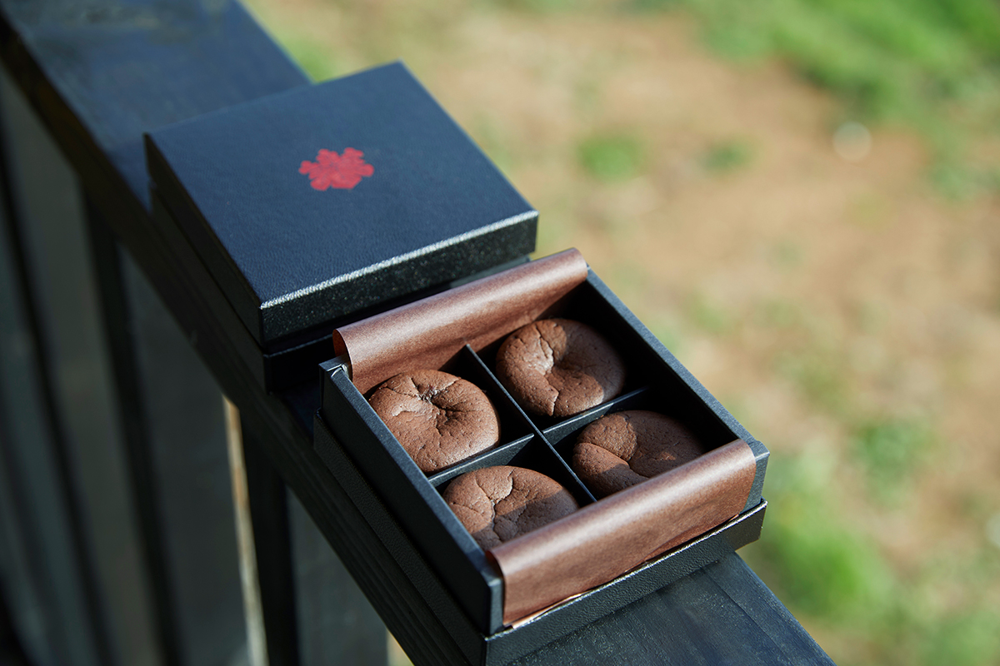
Domaine Takahiko
- Адрес
- префектура Хоккайдо, Ёити, Нобору-тё, 1395
- Телефон
- +81 135-22-6752
- Сайт
- takahiko.co.jp
Ученики
Винодельни выпускников Domaine Takahiko
Многие переселенцы, которые мечтают открыть винодельню в Ёити, сначала два года учатся виноградарству и виноделию как стажёры. Domaine Takahiko одно из самых желанных мест для такой учёбы. Вот как работают винодельни её выпускников.
Domaine Mont: ставка на пино гри
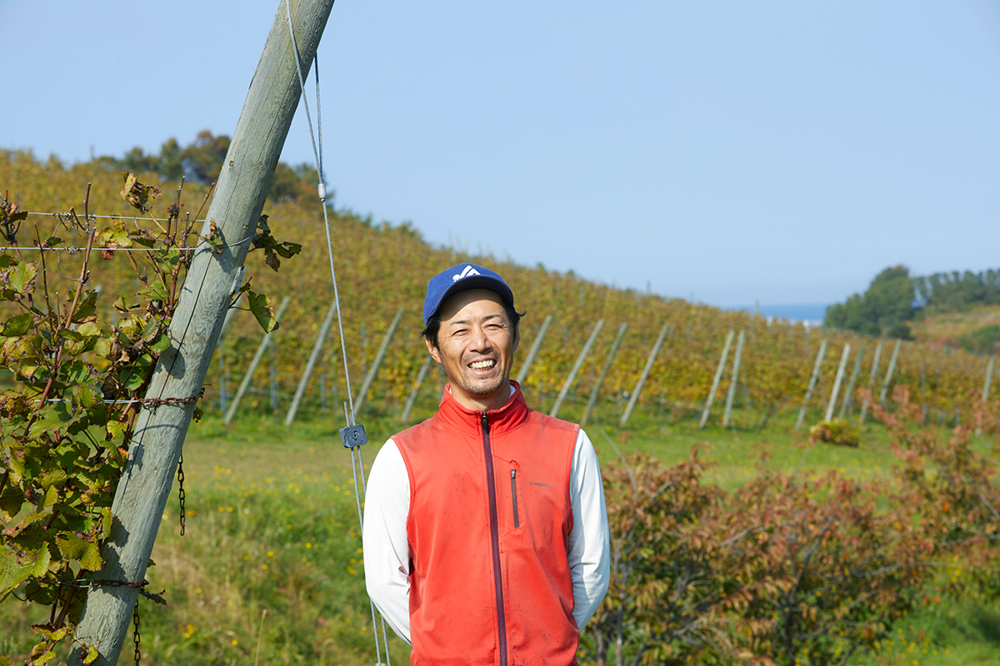
Пино гри раскрывается в прохладном климате, но в Японии этот сорт совсем не главный. Основатель Domaine Mont уверен, что именно пино гри даёт сложность и тонкость, которые нужны к японской еде. Участок под виноградник он расчистил сам, с бензопилой в руках, и посадил на нём только пино гри, который растит по органическим правилам. Вино «Донгури» («Жёлудь») и правда ароматное, с умами и сложным вкусом. С каждым годом лозы становятся старше и сильнее, и вино становится богаче.
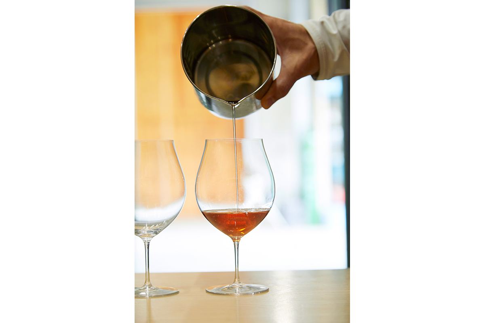
Есть у хозяйства и серия Mont из покупного винограда. В ней мерло Montrlot и совиньон блан «Соманьон блан» из ягод одного фермера. Названия шуточные, но вина сделаны всерьёз и получились отличными.
Domaine Mont
- Адрес
- префектура Хоккайдо, Ёити, Нобору-тё, 898
- Телефон
- +81 135-22-5330
- Сайт
- domainemont.com
«Ямададо»: столовое вино на каждый день
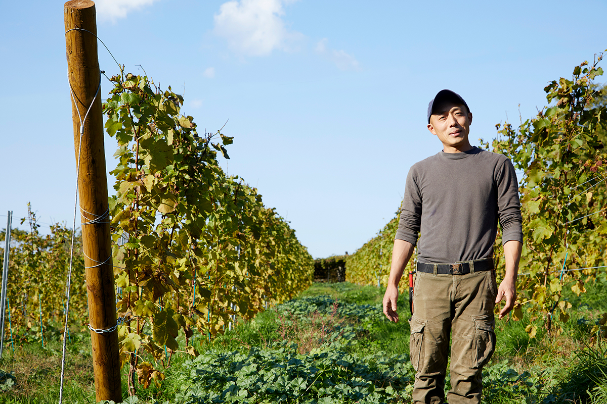
Основатель «Ямададо» хочет делать на Хоккайдо качественное столовое вино по урокам Соги. Поэтому он берёт не только свой виноград, но и охотно покупает ягоды у фермеров. Главным сортом он выбрал мюллер-тургау: сорт урожайный и в Ёити давно себя показал.
Винодельня устроена в перестроенном фермерском сарае, оборудование простое. В 2023 году здесь заложили 20 000 бутылок. Дальше винодел собирается наращивать объёмы на винограде из Ёити и выпускать больше недорогих и хороших вин. Для любителей вина это хорошая новость.
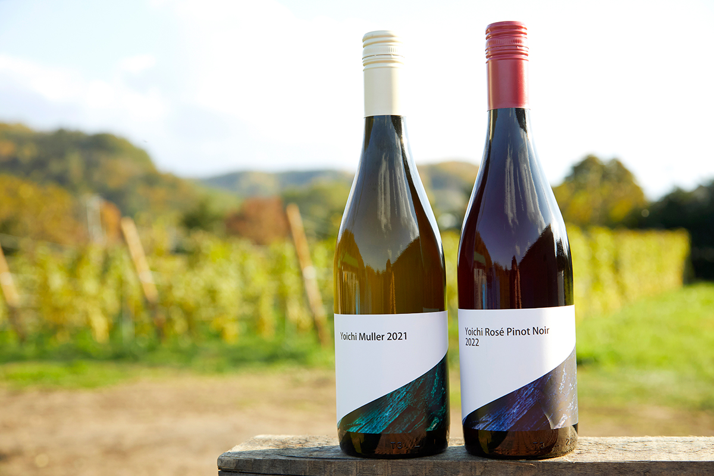
«Ямададо»
- Адрес
- префектура Хоккайдо, Ёити, Нобору-тё, 1064
- Сайт
- yamadado.jp
LOWBROW CRAFT Local Independent Winery: вино из любви к земле
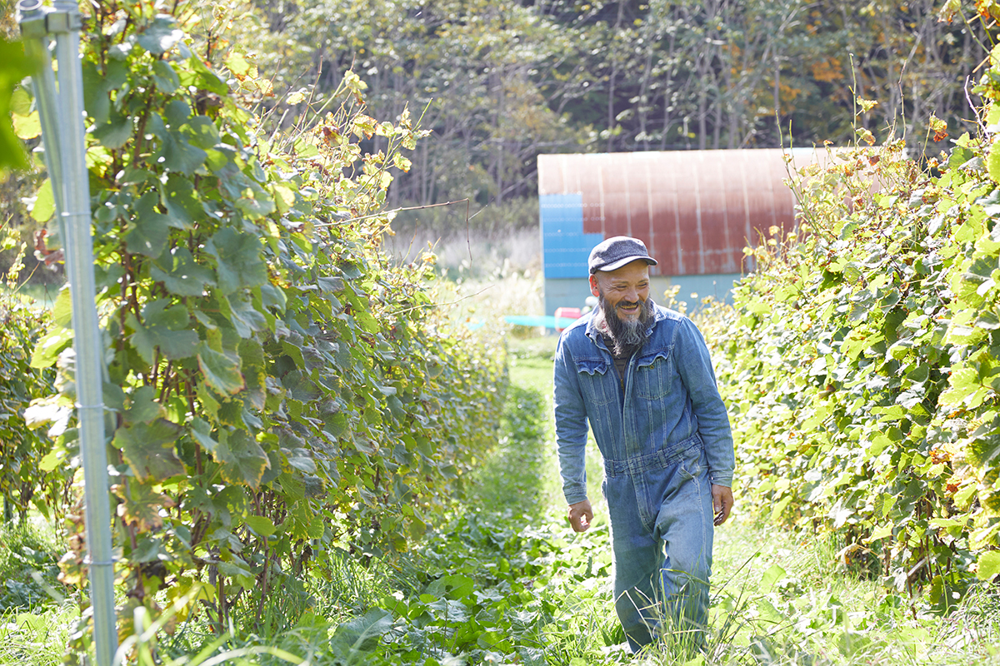
Основатель винодельни работал в крупном винном магазине в Токио, но хотел заниматься землёй и переехал на Хоккайдо. Три года он проработал стажёром в Domaine Takahiko и в 2022 году открыл своё дело.
Название взято от лоубров-арта, массового искусства, которое в 1970-х годах на Западном побережье США не признавало никаких правил. Это слово в названии значит, что вино задумано для обычного ужина. Игристое из столового винограда бодрое, сухое и пьётся легко, это вино на каждый день. С цвайгельтом на участке, разбитом на правом берегу речки Нобору, винодел поступает иначе: он хочет показать все возможности сорта и получить вино не только понятное, но и фруктовое, яркое.
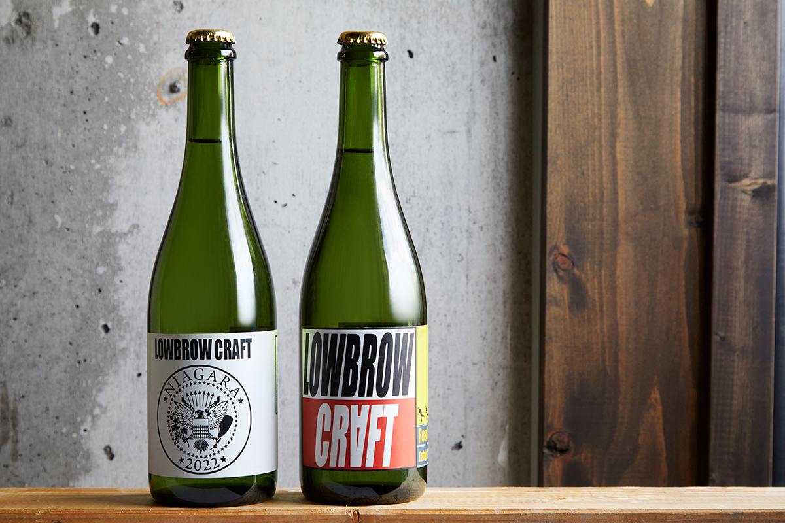
LOWBROW CRAFT Local Independent Winery
- Адрес
- префектура Хоккайдо, Ёити, Нобору-тё, 987
- Сайт
- lowbrowcraft.jp
Lan Seqqua: вино, в котором чувствуется природа
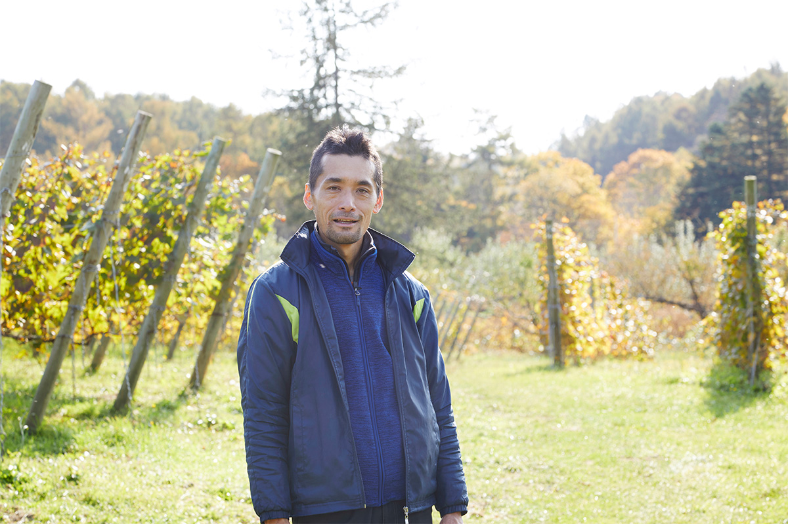
«Ран» в названии Lan Seqqua от весёлого «ран-ран-ран», а «сэкка» значит «снежинка». «Если уж объяснять, то это весёлый снег», говорит основатель. Зимой в Ёити выпадает почти два метра снега, и в названии винодельни слились красота и радость здешней зимы и радость вина.
Винодел родился в соседнем городке Ники, жил за пределами Хоккайдо, а потом вернулся домой, чтобы работать на земле. Отсюда и его подход: дать винограду раскрыться самому. Белое «Сахана-садзуки» он делает с первого года. В нём мягко раскрывается сладковатый фрукт ниагары, а лёгкая горчинка собирает вкус. Как и задумано, от этого вина хочется улыбаться.
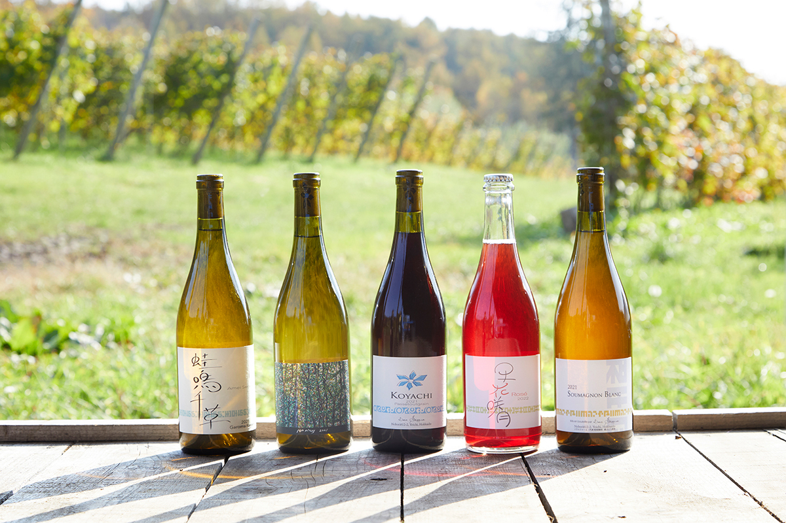
Lan Seqqua
- Адрес
- префектура Хоккайдо, Ёити, Нобору-тё, 612
- Сайт
- lanseqqua.jp
Domaine Mizuki Nakai: от фермы к винодельне
В 2023 году исполнилось сто лет с тех пор, как предки семьи Накай переехали из префектуры Тояма на холмы Нобору. В этот памятный год семья открыла винодельню, первую среди местных фермеров. Под названием «Накай канко ноэн» семья выращивает вишню и многие другие фрукты и была одной из тех, кто первым посадил в Ёити винный виноград.
Наследница пятого поколения училась у Такахико Соги, который когда-то сам стажировался на их ферме, и готовилась к первому урожаю. В 2023 году из части пино нуар, который раньше шёл на сок, и из кернера сделали 3000 бутылок вина, а ещё сидр. Большую часть своего винограда семья по-прежнему отдаёт нескольким винодельням. Ей нет ещё и тридцати, и под присмотром семьи она развивает характер вина, названного её именем.
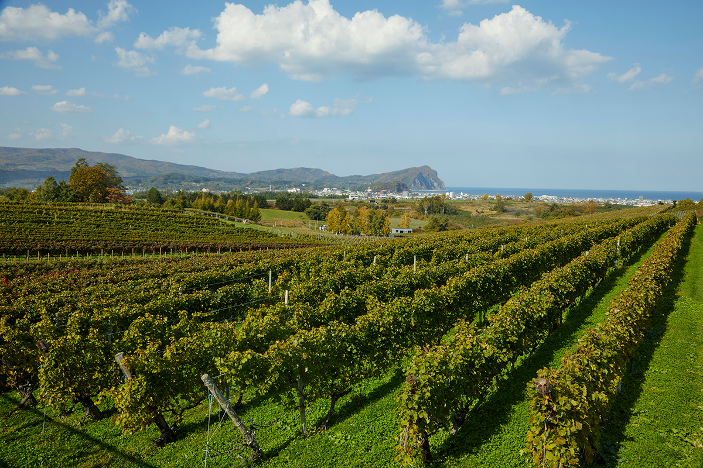
Domaine Mizuki Nakai
- Адрес
- префектура Хоккайдо, Ёити, Нобору-тё, 1383
Ещё
Две винодельни и магазин
Кроме уже названных, в долине Нобору работают и другие хорошие винодельни. Вот ещё две, а за вином Ёити стоит зайти в магазин «Наканэ сакэтэн».
Domaine Yui: винодельня одной семьи
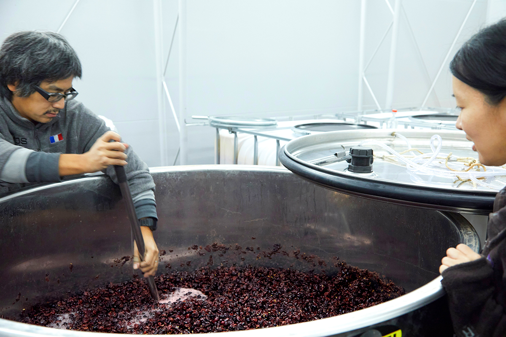
Оба супруга любят вино. Они хотели растить детей не в большом городе, а на природе, и превратили увлечение в профессию. В 2019 году они взяли на себя ферму, и им достался виноградник со старыми лозами лабруски: делавэр, кэмпбелл эрли. По форме участка его называют «ферма T». Из его винограда делают чистое, понятное натуральное вино. Участок с винными сортами, который супруги разбили сами, по форме назвали «ферма A», и с зимы 2023 года вина с него собирались выпускать уже по-настоящему.
Кто здесь винодел, а кто виноградарь, сказать нельзя: оба равны во всём. Они спорят, пробуют, ошибаются, и вино с каждым годом становится лучше.
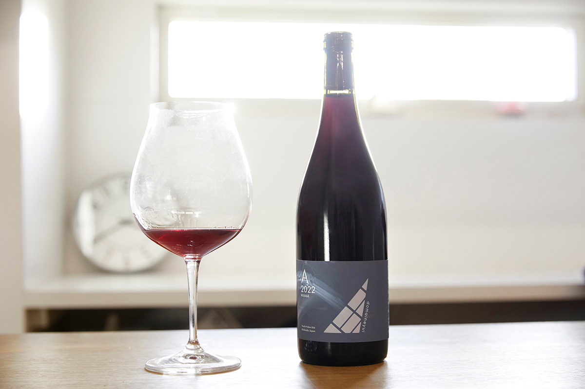
Domaine Yui
- Адрес
- префектура Хоккайдо, Ёити, Нобору-тё, 812
«Нобору дзёдзо»: только цвайгельт
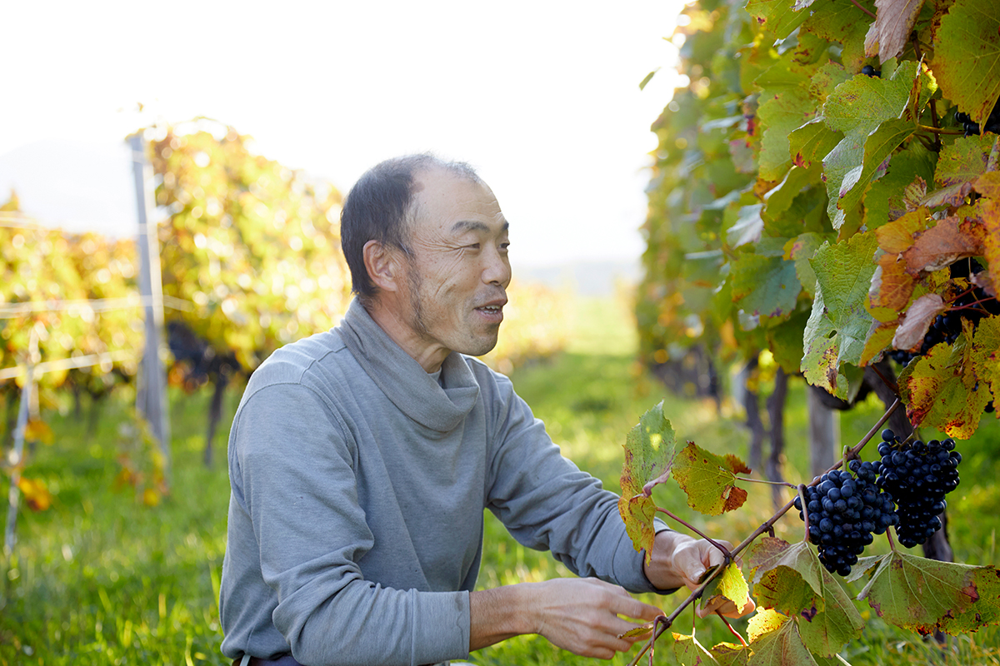
Хозяин «Нобору дзёдзо» работал в сельскохозяйственной организации, переехал в Ёити и в 2011 году взял на себя ферму в Нобору. На 1,9 гектара у него растёт только цвайгельт.
Винодельня устроена в двух японских комнатах его дома и даже для Ёити, где много маленьких хозяйств, очень мала. Делают здесь одно вино: около 3000 бутылок розового «Сэцуна-ута». Для него хватает примерно 0,4 гектара, остальной виноград уходит в Coco Farm & Winery в Тотиги. «Сэцуна-ута» достать трудно, и хочется, чтобы вина было больше, но хозяину больше всего нравится работа в поле, и такое соотношение винограда и вина его устраивает.
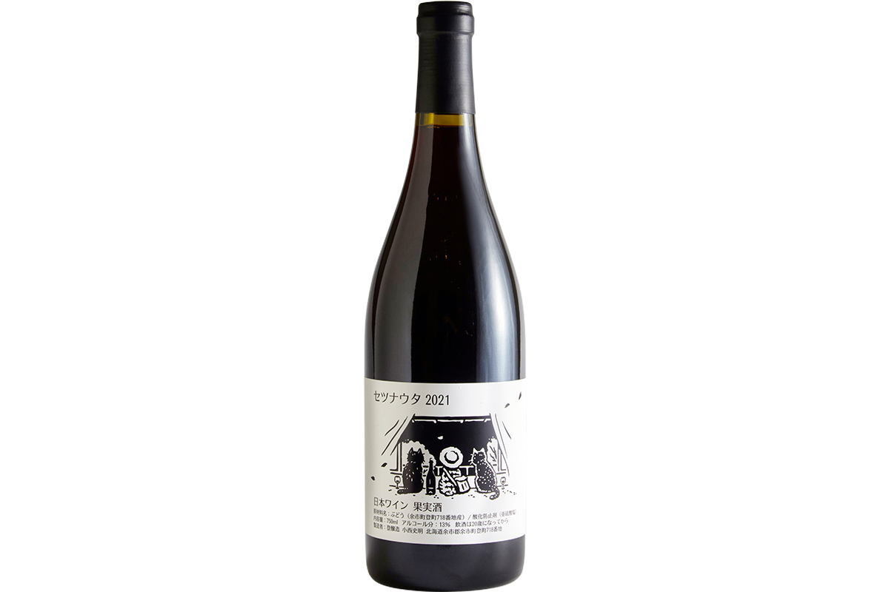
«Нобору дзёдзо»
- Адрес
- префектура Хоккайдо, Ёити, Нобору-тё, 718
«Наканэ сакэтэн»: магазин, где знают всё о вине Ёити
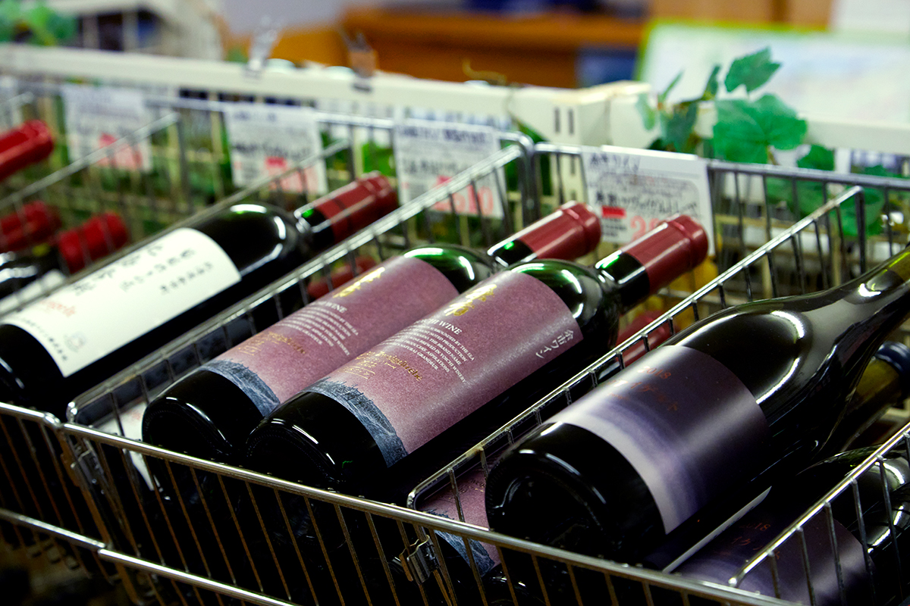
На полках в основном вина Хоккайдо, прежде всего из Ёити и соседнего Ники, а сакэ и пива совсем немного. «За сакэ к нам никто не ходит», объясняет хозяин.
Культовые вина расходятся сразу, как только попадают на полку. Зато хозяин подскажет: «Если брать, то вот это», и покажет отличное вино, которое прячется в тени знаменитых. Он рассказывает о вине Ёити каждому по его уровню, от азов до тонкостей, поэтому покупатели здесь задерживаются надолго.
«Наканэ сакэтэн»
- Адрес
- префектура Хоккайдо, Ёити, Окава-тё, 3-76
- Телефон
- +81 135-22-2315
- Часы работы
- 10:00–19:30
- Выходные
- воскресенье
Фото: Кэнта Ёсидзава.